GS-CPR: Efficient Camera Pose Refinement via 3D Gaussian Splatting
ICLR 2025
1HKUST
2University of Oxford
3Dartmouth College
Note: During the ICLR review process, we changed the name of our framework from GSLoc to GS-CPR according to the comments of reviewers in the camera-ready version. The code will be released by March, 2025!
 The overview of \( \text{GS-CPR} \). Our proposed method, \( \text{GS-CPR} \), is a test-time camera pose refinement framework. We assume availability of a pre-trained pose estimator and a 3DGS model of the scene. For a query image, we first obtain an initial estimated pose from the pose estimator. Our goal is to output a refined 6DoF camera pose.
The overview of \( \text{GS-CPR} \). Our proposed method, \( \text{GS-CPR} \), is a test-time camera pose refinement framework. We assume availability of a pre-trained pose estimator and a 3DGS model of the scene. For a query image, we first obtain an initial estimated pose from the pose estimator. Our goal is to output a refined 6DoF camera pose.

The overview of \( \text{GS-CPR}_{\text{rel}} \) (a faster alternative with relative post estimation). The difference with GS-CPR is highlighted in the red box.
Abstract
We leverage 3D Gaussian Splatting (3DGS) as a scene representation and propose a novel test-time camera pose refinement (CPR) framework, GS-CPR. This framework enhances the localization accuracy of state-of-the-art absolute pose regression and scene coordinate regression methods. The 3DGS model renders high-quality synthetic images and depth maps to facilitate the establishment of 2D-3D correspondences. GS-CPR obviates the need for training feature extractors or descriptors by operating directly on RGB images, utilizing the 3D foundation model, MASt3R, for precise 2D matching. To improve the robustness of our model in challenging outdoor environments, we incorporate an exposure-adaptive module within the 3DGS framework. Consequently, GS-CPR enables efficient one-shot pose refinement given a single RGB query and a coarse initial pose estimation. Our proposed approach surpasses leading NeRF-based optimization methods in both accuracy and runtime across indoor and outdoor visual localization benchmarks, achieving new state-of-the-art accuracy on two indoor datasets.
Pose Refinement
Each subfigure is divided by a diagonal line, with the bottom left part rendered using the estimated pose and the top right part displaying the ground truth (GT) image. Patches highlighting visual differences are emphasized with green insets for enhanced visibility.Indoor
 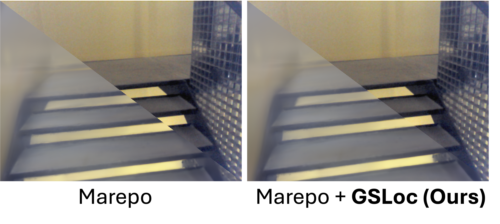
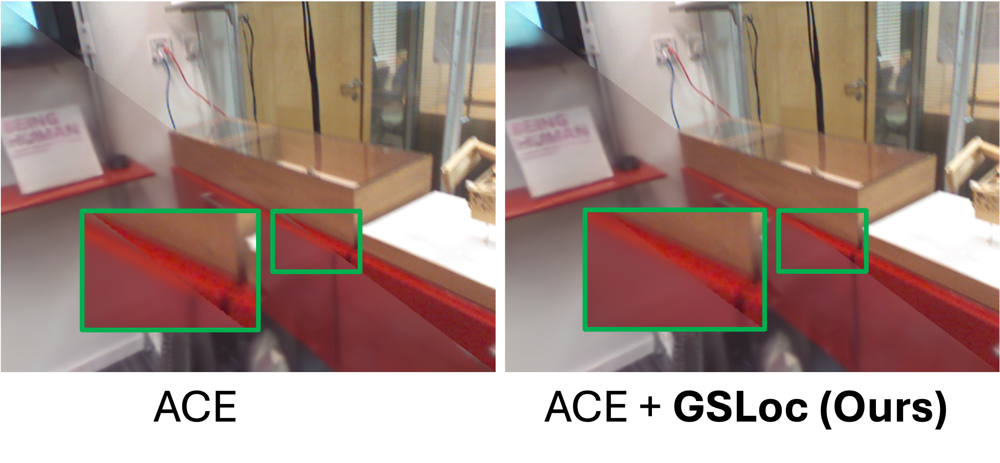
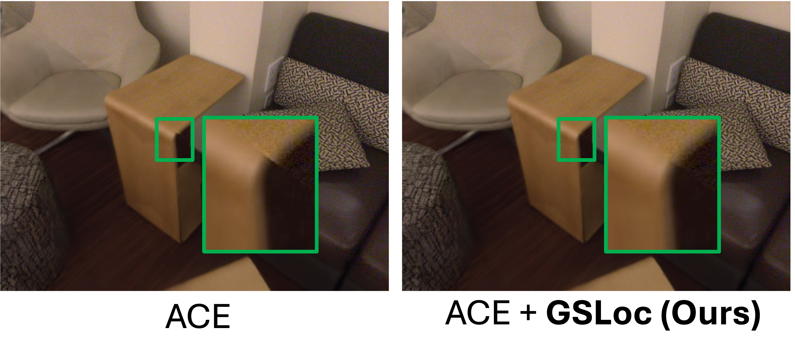
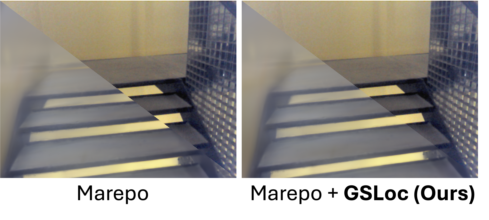
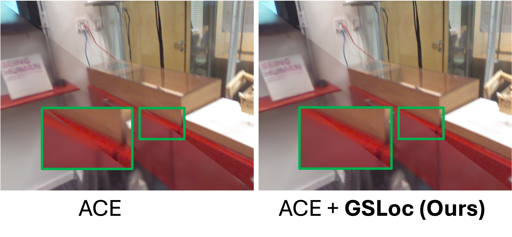
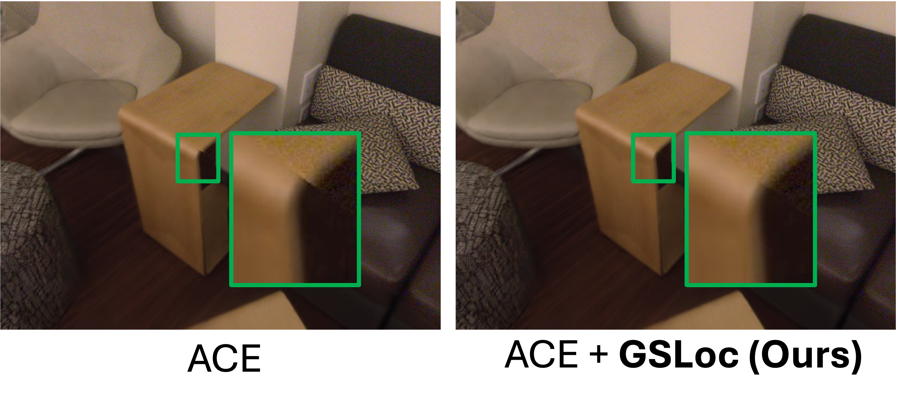


 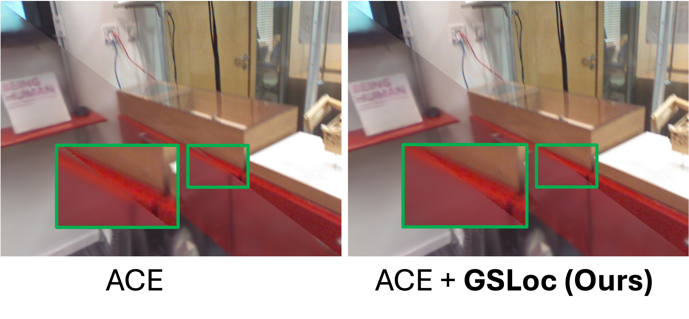
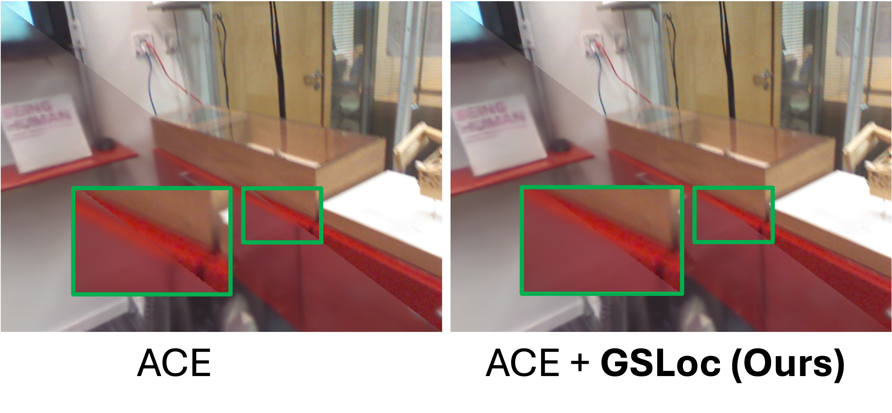
 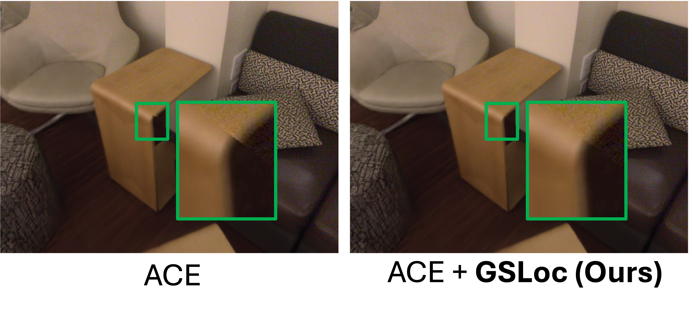
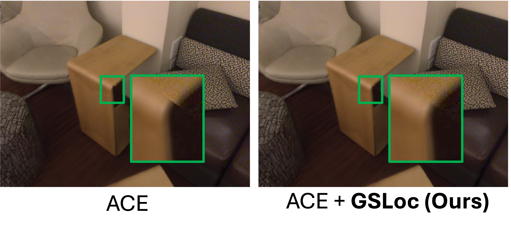
Outdoor
 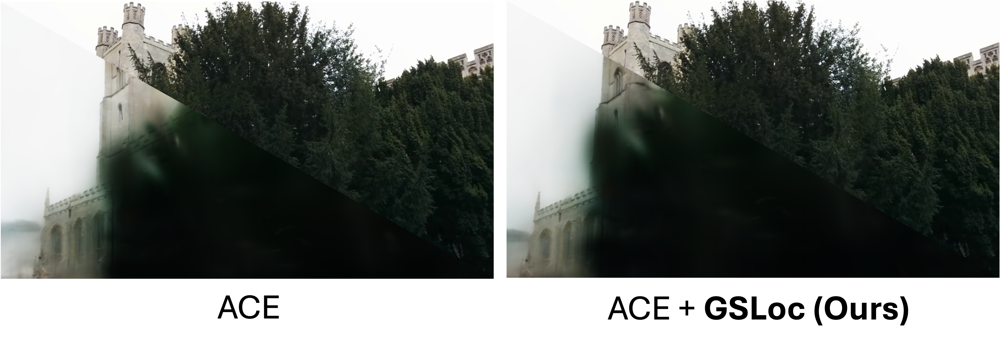
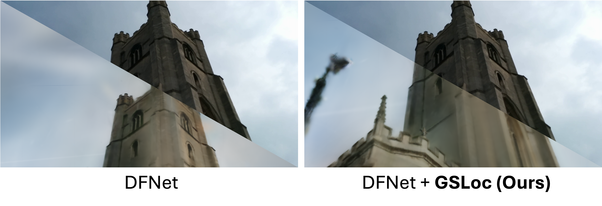
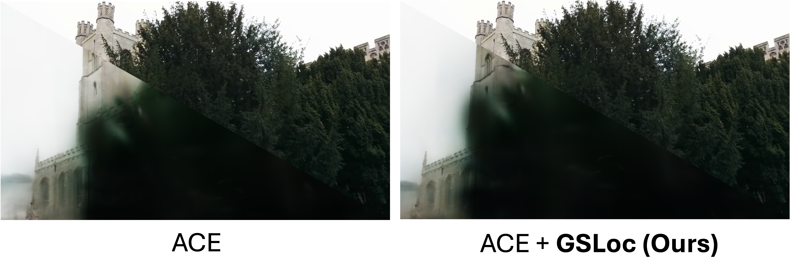
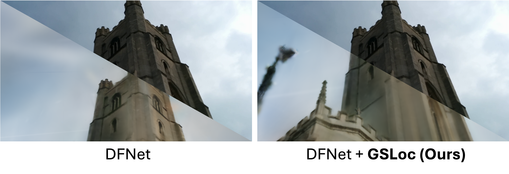


 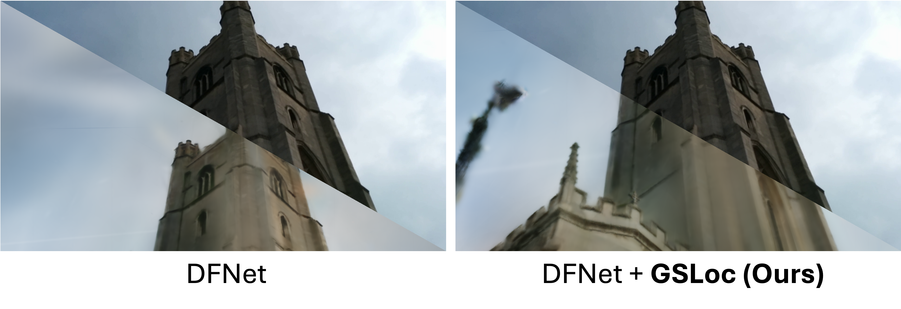
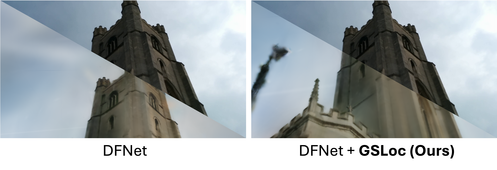
BibTeX
@article{liu2024gsloc,
title={Gsloc: Efficient camera pose refinement via 3d gaussian splatting},
author={Liu, Changkun and Chen, Shuai and Bhalgat, Yash and Hu, Siyan and Cheng, Ming and Wang, Zirui and Prisacariu, Victor Adrian and Braud, Tristan},
journal={arXiv preprint arXiv:2408.11085},
year={2024}
}